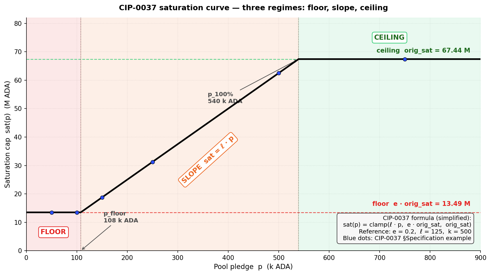
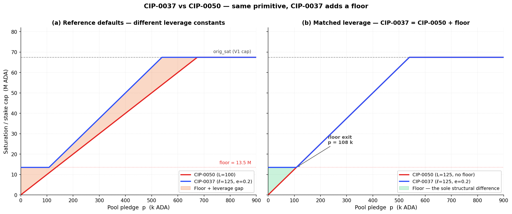

CIP-0037 replaces V1's flat saturation cap (z₀ = 1/k, ~67 M ADA) with a pledge-indexed saturation curve. Three regimes shape the curve: a 20 % floor at zero or near-zero pledge (so a hollow pool still keeps a fifth of the V1 capacity), a linear slope in the mid-pledge range, and a ceiling at full pledge that recovers the V1 cap. Three new parameters — e (floor), ℓ (slope), p_100% (ceiling anchor) — control the curve.
The intent is the same as CIP-0050: make pledge bind on the reward envelope so that V2 §3.2 (pledge as signal) and §3.4 (pool-level concentration) are addressed. The instrument is softer: where CIP-0050 sends zero-pledge pools to zero reward, CIP-0037 keeps them at 20 % of V1. In the simplified algebraic form, the two are the same primitive — a linear-in-pledge slope capped at orig_sat — with CIP-0037 adding a floor and a wider governance surface (three scalars vs CIP-0050's single L).
The core question this evaluation asks: does CIP-0037's softer landing at the bottom and richer parametrisation justify the wider governance surface and the price-dependent calibration?
The argument proceeds in three parts:
-
Introduction (§1). CIP identity card, origin and motivation (Casey Gibson, 2021), the diagnostic findings shared with CIP-0050, and the V2 §3 problem statement the proposal addresses.
-
Mechanism (§2). The formula in its simplified clamped form
sat(p) = clamp(ℓ·p, e·orig_sat, orig_sat), the three regimes (floor / slope / ceiling), structural properties (kinship with CIP-0050, MPO fleet-split penalty on the slope), and quantification at current mainnet parameters. -
Limits as a standalone proposal (§3). Three synthesis findings — S1 (mechanical sharpness softened by the 20 % floor — Delivers), S2 (capital-capability bias matching CIP-0050 — Regresses), S3 (governance surface, price-robustness, entity-level §3.4 gap — Regresses + Blind spot).
The Executive summary below packages the verdict; the Findings summary table after it is the navigation index for §3.
Executive summary
- Verdict. Same target as CIP-0050, softer primitive. A pledge-indexed saturation curve replaces the static $z_0 = 1/k$ ceiling, with three regimes: a 20 % floor at zero / low pledge, a linear slope in the mid-pledge range, a ceiling at full pledge. Correctly targets V2 §3.2 (pledge signal) + pool-level §3.4 (concentration). Same capital-capability bias as CIP-0050 — penalises operators by their ability to self-pledge, not by operator quality — but with a softer landing for the smallest pools.
- Instrument. Three new parameters $(e, \ell, p_{100\%})$ — governance surface 3× larger than CIP-0050's single $L$. $p_{100\%} = 500\,000$ ADA is an absolute anchor → the calibration is price-dependent (V2 §4.3 price-robustness compounds with price shifts). HFC required (new ledger rule).
- Three synthesis findings carry the verdict — detailed in §3 and re-surfaced inline:
- S1 — Structural sharpness on pledge-as-signal, softened at the bottom by the 20 % floor (3 [D] F's: §3.1).
- S2 — Capital-capability bias: Healthy-tier and above are materially clipped at the stake-weighted median retail pledge ratio (3 [R] + 1 [B] F's: §3.2).
- S3 — Governance / price-robustness / entity-level gaps (3 [R] + 1 [B] F's: §3.3).
Findings summary
CIP evaluations use a three-level taxonomy mirroring the diagnostic's SUBFLOW.O<n>.F<m>: S
| Code | Tag | Claim | Emerges in |
|---|---|---|---|
| CIP-0037.S1 | Mechanically sharp on pledge-as-signal, softened at the bottom by the 20 % floor | §3.1 | |
| CIP-0037.S1.F1 | [D] | Monotonicity in pledge. $\partial \text{sat}/\partial p \geq 0$ on the slope regime; direct delivery on V2 §3.2 — higher pledge strictly widens the saturation envelope until the ceiling | §2.2, §3.1 |
| CIP-0037.S1.F2 | [D] | 20 % floor protects the smallest pools. $\text{sat}(0) = 0.2 \cdot \text{orig\_sat} \approx 13.5$ M ₳ — a zero-pledge pool still keeps 20 % of the V1 saturation cap. Sub-block and Sub-reliable tiers (σ ≪ 13.5 M) see no clipping under zero pledge | §2.2, §2.3, §3.1 |
| CIP-0037.S1.F3 | [D] | MPO fleet-split penalty. Splitting a fixed pledge budget across $N$ pools moves each pool left on the saturation curve (per-pool pledge falls to $P/N$). For a 1 M ₳ pledge budget: 1-pool full 100 % of K; 8-pool split: 25 % of K each (62.5 k pledge on slope). Pool-level §3.4 concentration gain — less sharp than CIP-0050's revenue-neutral identity but directionally aligned | §2.3 MPO-split table, §3.1 |
| CIP-0037.S2 | Capital-capability bias — Healthy-tier and above are clipped at the mainnet-typical pledge ratio; the discrimination is by capital capacity, not operator quality | §3.2 | |
| CIP-0037.S2.F1 | [R] | Median retail reward cut at the Healthy tier and above. At reference parameters ($e = 0.2$, $\ell = 125$, $p_{100\%} = 500$ k) and the stake-weighted median retail pledge ratio of 0.07 % (POL.O2.F1), any pool with $p < 108$ k ADA is in the floor regime — σ' is clipped to 13.5 M regardless of σ. Healthy pools (3–38.5 M) lose 10–64 % of reward; Large-healthy / Near-saturation / Saturated pools lose 73–82 % | §2.3, §3.2 |
| CIP-0037.S2.F2 | [R] | Custodial segment (21 % of productive stake) cannot respond. Custodial-by-extraction (57 entities, 2.04 B ADA) hold custodied retail funds and cannot self-pledge — reward clipped to the 20 % floor regardless of operator quality. Custodial-by-pledge (10 entities, 1.59 B) already above ceiling, unaffected | §1.3, §3.2 |
| CIP-0037.S2.F3 | [R] | Absolute-pledge threshold is pool-size-independent. The ~108 k ADA needed to leave the floor regime is the same for a 2 M pool and a 50 M pool — so the fraction of σ that must be self-pledged to escape the floor falls as the pool grows. The reform is mechanically regressive: larger pools escape clipping more easily than smaller pools, at equal absolute pledge | §2.3, §3.2 |
| CIP-0037.S2.F4 | [B] | The "operators will pledge more" bet is contradicted by POL.O2.F2 + POL.O5.F3. Pledge yield is 0.68 %/yr at best vs ~2.3 %/yr passive delegation (POL.O2.F2). 42 of 48 saturation-scale MPOs already forfeit the bonus (POL.O5.F3). CIP-0037 reshapes the rules but does not flip the dominance relation — the population that has chosen not to pledge continues to face the same opportunity cost | §3.2 |
| CIP-0037.S3 | Governance surface, price-robustness, and entity-level gaps compound with the S2 bias | §3.3 | |
| CIP-0037.S3.F1 | [R] | Governance surface 3× larger than CIP-0050. Three parameters $(e, \ell, p_{100\%})$ to calibrate vs one for CIP-0050. Joint re-calibration required on any k change (orig_sat depends on k) and on any price shift (p_100% is absolute ADA). V2 §4.4 governability cost is material |
§1.4, §3.3 |
| CIP-0037.S3.F2 | [R] | Price-dependence breaks V2 §4.3 price-robustness. $p_{100\%} = 500\,000$ ADA is absolute, not a ratio. At ADA = \$0.10 the anchor costs operators \$50 k; at \$1.00 it costs \$500 k. The slope regime shifts correspondingly. CIP-0050's dimensionless $L$ is structurally robust; CIP-0037's calibration needs re-peg on price moves | §3.3 |
| CIP-0037.S3.F3 | [R] | Entity-level §3.4 gap persists. Custodial-by-pledge entities with native pledge exceeding $p_{100\%}$ bind no cap — they operate on the ceiling regime where σ' = orig_sat regardless of pledge amount. The 10 entities / 1.59 B ₳ segment that dominates entity-level concentration today remains entirely unaffected | §3.3 |
| CIP-0037.S3.F4 | [B] | §3.1 small-pool viability risk — softer than CIP-0050 but present. Healthy-tier retail single-pool operators (214 entities, 2.44 B ₳ — operator-delegator §4.3.3) with sub-compliant pledge see 10–64 % of pool reward clipped. With the fee-layer split unchanged, operator take and delegator ROS fall together. Without a companion §3.1 instrument, CIP-0037 risks accelerating attrition in exactly the Healthy-tier single-pool population V2 §3.1 names as the priority | §3.3 |
Cross-layer link. CIP-0037 acts on the right V2 layer (reward-distribution, pre-split) — the layer the fee-layer critique (../operator-delegator/README.md) identifies as the principled home for distributional fixes. Its target is V2 §3.2 pledge-as-signal, not §3.1 viability — same as CIP-0050. Deploying CIP-0037 without an active §3.1 instrument carries the same small-pool viability risk, softened at the very bottom by the 20 % floor but still material for the Healthy tier and above.
Same-layer pairing. Stacking CIP-0037 with CIP-0050 ($\sigma' = \min(\sigma, \text{sat}(p), L \cdot p)$) is technically well-defined but not canonical — the two are alternative formulations of the same §3.2 + pool-level §3.4 intent. A coherent V2 package picks one.
Table of Contents
1. Introduction
CIP-0037 — "Dynamic Saturation Based on Pledge". A 2021 proposal to replace the static $z_0 = 1/k$ saturation cap with a monotone function of pledge. The core idea: the "optimal pool size" should scale with the operator's capital commitment, so that splitting pledge across many pools mechanically shrinks each pool's reward envelope.
1.1. Identity card
| Field | Value |
|---|---|
| CIP number | CIP-0037 |
| Title | Dynamic Saturation Based on Pledge |
| Author | Casey Gibson |
| Created | 2021/12/03 |
| Category | Ledger |
| Status | Proposed (as of 2026/04) |
| Official page | cips.cardano.org/cip/CIP-0037 |
| Source (GitHub) | cardano-foundation/CIPs / CIP-0037 |
| Discussion PR | cardano-foundation/CIPs #163 |
1.2. Origin and context
Authorship and moment. Written in December 2021 by Casey Gibson. The CIP's motivation (quoted from the CIP text):
"An SPO might have a pledge of 30,000 ADA across 10 pools, while another SPO might have 1,000,000 pledge but only has 1 pool with a small amount of active stake. Since there is no technical advantage to having a high pledge, the meaning and purpose of a pledge is redundant."
The CIP proposes a saturation function $\text{sat}(p)$ that grows with pledge. Splitting a fixed pledge across more pools moves each pool left on the curve, reducing per-pool capacity.
Scope. CIP-0037 modifies the saturation formula itself — the pool-distribution stage of the reward pipeline. The fee-layer split (minPoolCost, minPoolMargin, poolRate) is untouched. It is therefore a pools-distribution-layer instrument with the same mechanical footprint as CIP-0050.
Relation to other CIPs.
- CIP-0050 — the other stake-cap candidate. Same V2 targets (§3.2 + pool-level §3.4); different primitive (hard cap vs smooth curve). Same-layer pairing not canonical.
- Fee-layer CIPs (CIP-0023, CIP-0082) — compose cleanly on the mechanical axis (different pipeline stage) but target different V2 milestones.
- k lever — orig\_sat = \text{Supply} / k$ is a reference scale for CIP-0037; anykchange directly reshapes the saturation curve. Standalone k analysis: [../operator-delegator/k-parameter.md`](k-parameter.html).
1.3. Related diagnostic findings
CIP-0037 targets the same pledge pathology as CIP-0050; the diagnostic findings that matter are the same core set, with CIP-0037-specific nuances around the floor and the three-parameter surface.
| Finding | Why shared | Supporting observations |
|---|---|---|
| POL.O2.F1 — 78 % of staked ADA at pledge ratio < 1 %; stake-weighted median 0.07 % | At reference parameters ($e=0.2$, $\ell=125$, $p_{100\%}=500$ k), pools need ~108 k ADA of absolute pledge to leave the floor regime. The stake-weighted-median mainnet pool sits far below that threshold | — |
| POL.O2.F2 — Pledge yield 0.68 %/yr vs ~2.3 %/yr passive delegation | Same opportunity-cost argument as for CIP-0050: the reform amplifies the pledge incentive but does not flip the opportunity-cost comparison that explains the current non-pledge equilibrium | — |
| POL.O5.F1 / POL.O5.F2 — 83 attributed entities operate 449 productive pools holding 76.7 % of productive stake; 48 are saturation-scale | Entity-level concentration metric. CIP-0037's ceiling regime leaves large-pledge entities unconstrained — custodial-by-pledge segment not addressed | — |
| POL.O5.F3 — 42 of 48 saturation-scale MPOs forfeit the pledge bonus today | The population that could respond to CIP-0037 by increasing pledge has already shown it does not choose that option under current rules | — |
| POL.O6.F2 — 78 % of single-pool stake has pledge ratio < 2 % | Retail single-pool operators — the population V2 §3.1 targets — empirically do not pledge above the CIP-0037 floor-escape threshold. Their pool reward is clipped to 20 % of the V1 cap | — |
| OPE.O7.F1 — Delegation is not sticky, not clearly yield-following | The CIP's decentralisation story requires delegator migration toward higher-pledge alternatives; the diagnostic does not support this assumption at the scale needed | — |
1.4. Missing CPSs — mapping to V2 §3
CIP-0037's target is explicit: the pledge signal and the MPO pledge-dilution pathology. Mapped to V2 §3:
| V2 slot | What CIP-0037 proposes as the fix | Weight | Evidence base |
|---|---|---|---|
| §3.2 Restore the notion of pledge among operators | $\text{sat}(p)$ — monotone in pledge; splitting pledge across pools shrinks per-pool capacity | Primary | POL.O2.F1, POL.O2.F2 |
| §3.4 Reduce the concentration effects that distort both populations | Pool-level: MPO fleet expansion incurs a per-pool saturation penalty. Entity-level: not addressed — custodial-by-pledge entities operate on the ceiling regime | Secondary (pool-level) | POL.O5.F1 |
| §3.1 Guarantee operator viability across the entire productive population | Not addressed by the instrument. The 20 % floor preserves some reward at low pledge, but Healthy-tier + retail single-pool operators with sub-compliant pledge see 10–64 % reward cut — a worse position than today at the fee-split level | Out of scope — softly regressive | OPE.O6.F4, POL.O6.F2 |
| §3.3 Maintain and diversify a competitive delegator yield | Not addressed. Delegator ROS reshuffles via σ' clipping | Out of reach | — |
2. Mechanism
2.1. Formula
CIP-0037 replaces the static $z_0 = 1/k$ saturation cap with a pledge-indexed saturation function. Simplified from the canonical source (see errata below):
$$\boxed{\text{sat}(p) \;=\; \text{clamp}\bigl(\ell \cdot p,\;\; e \cdot \text{orig\_sat},\;\; \text{orig\_sat}\bigr)}$$
where $\text{clamp}(x, \text{lo}, \text{hi}) = \min(\text{hi}, \max(\text{lo}, x))$.
Parameters:
- $\text{orig\_sat} = \text{Supply} / k$ — the V1 baseline saturation cap (≈ 67.44 M ₳ at $k = 500$).
- $e$ — floor multiplier (reference: 0.2 → 20 % of V1 cap minimum).
- $\ell$ — pledge leverage constant (reference: 125).
- $p$ — pool pledge (absolute ADA).
- $p_{100\%} = \text{orig\_sat} / \ell$ — pledge level at which $\text{sat}$ reaches the ceiling (the CIP lists $p_{100\%}$ as a third parameter; it is in fact determined by $\ell$ and $k$). At reference, $p_{100\%} \approx 540\,000$ ADA — the CIP approximates this by the round figure $500\,000$.
The reward-eligible stake becomes $\sigma' = \min(\sigma, \text{sat}(p))$; the reward curve then applies to $\sigma'$: $\hat f' = \bar p \cdot P_{\max} \cdot E(\nu', \pi)$ with $\nu' = \sigma' / z_0$ and $\pi = s/\sigma$ (the pledge ratio is unchanged by the rule). The operator/member split is unchanged.
Three regimes fall directly from the clamp.

| Regime | Condition | sat(p) |
|---|---|---|
| Floor | $p \leq e \cdot \text{orig\_sat} / \ell = 108$ k ADA | $e \cdot \text{orig\_sat}$ = 13.49 M |
| Slope | $108$ k $< p <$ $540$ k | $\ell \cdot p$ |
| Ceiling | $p \geq \text{orig\_sat} / \ell = 540$ k ADA | $\text{orig\_sat}$ = 67.44 M |
The blue dots on the curve are the six numerical example points the CIP itself publishes in its Specification section — they lie exactly on the clamped piecewise curve.
Structural kinship with CIP-0050. Read side-by-side, CIP-0037 and CIP-0050 are the same primitive applied to a large pool (σ ≥ orig_sat):
- CIP-0050 effective cap on reward-eligible stake: $\min(\text{orig\_sat}, L \cdot p)$ — linear in pledge, V1 ceiling, hard break at zero pledge.
- CIP-0037 effective cap: $\text{clamp}(\ell \cdot p, e \cdot \text{orig\_sat}, \text{orig\_sat})$ — linear in pledge with slope $\ell$, V1 ceiling, floor at $e \cdot \text{orig\_sat}$.
The slope is identical. Reference leverage differs only by convention ($\ell = 125$ vs $L = 100$). The sole structural difference is the floor:

Panel (a) uses each CIP's reference leverage (ℓ=125 for CIP-0037, L=100 for CIP-0050) — the gap conflates the 25 % leverage difference with the floor. Panel (b) matches leverage at $\ell = L = 125$ to isolate the floor as the sole structural difference. Reading this correctly reframes the two proposals: CIP-0037 is CIP-0050 plus a floor. Every S1 / S2 / S3 finding below carries across one-for-one, modulated by whether the floor binds in the regime considered.
Design surface.
| Property | Value |
|---|---|
| Effective governance parameters | $(e, \ell)$ — two scalars ($p_{100\%}$ is derived as $\text{orig\_sat}/\ell$) |
| Reference values | $e = 0.2$, $\ell = 125$ (⇒ $p_{100\%} \approx 540$ k) |
| Layer | Stake-cap (applied before reward curve) |
| Fee-layer split | Unchanged |
| Hard fork | Required (new ledger rule) |
| Re-registration | Not required |
Errata — reconciling the simplified form with the CIP source. The canonical CIP-0037 specification publishes the formula as JavaScript:
new_sat = orig_sat * Math.max(e, min(1/k, pledge/orig_sat * l)); final_sat = max(new_sat, orig_sat);with custom helper functions where
max(v1, v2)returns the smaller value andmin(v1, v2)returns the larger — the names are inverted relative to their semantics. Read with real-world semantics: the innerreal_max(1/k, p·ℓ/orig_sat)is dominated by the slope term for any pledge above ≈ 1 080 ADA (the $1/k = 0.2\,\%$ guard is a numerical floor that never binds in practice), and the outerfinal_satline clamps to the ceiling $\text{orig\_sat}$. The net operation is exactly $\text{clamp}(\ell \cdot p, e \cdot \text{orig\_sat}, \text{orig\_sat})$ — the form used above.
Design surface.
| Property | Value |
|---|---|
| New parameters | $(e, \ell, p_{100\%})$ — three anchors |
| Reference values | $e = 0.2$, $\ell = 125$, $p_{100\%} = 500\,000$ ADA |
| Layer | Stake-cap (applied before reward curve) |
| Fee-layer split | Unchanged |
| Hard fork | Required (new ledger rule) |
| Re-registration | Not required |
| Governance surface | 3 scalars |
2.2. Structural properties (theorems, not predictions)
| Property | Statement | Type |
|---|---|---|
| Floor | $\text{sat}(0) = e \cdot \text{orig\_sat}$ — zero-pledge pools retain $e = 20\,\%$ of V1 capacity | Algebraic |
| Monotonicity in pledge | $\partial \text{sat}/\partial p \geq 0$ on the slope regime (and weakly on the clamps) | Algebraic |
| Three regimes | Floor ($p < p_{\text{floor}}$), slope ($p_{\text{floor}} \leq p < p_{100\%}$), ceiling ($p \geq p_{100\%}$) | Algebraic |
| MPO fleet-split penalty | Splitting pledge budget $P$ across $N$ equal pools: each pool has $p = P/N$; per-pool sat shrinks (below $p_{100\%}$) as $N$ grows | Algebraic |
| Price dependence | $p_{100\%}$ is absolute ADA; fiat-denominated opportunity cost shifts with the ADA/USD rate | Structural |
| k-dependence | $\text{orig\_sat} = \text{Supply}/k$ — any $k$ change reshapes the entire curve | Structural |
The first four are the design strengths; the last two are governance-surface costs that distinguish CIP-0037 from CIP-0050's dimensionless primitive.
2.3. Quantification at current mainnet parameters (epoch ~623, 2026/04)
All calibrations use reference parameters ($e = 0.2$, $\ell = 125$, $p_{100\%} = 500$ k, $k = 500$, $\text{orig\_sat} = 67.44$ M ₳).
Pledge-to-threshold mapping. The pledge needed to exit the floor regime:
$$p_{\text{floor-exit}} = \frac{e \cdot \text{orig\_sat}}{\ell} = \frac{0.2 \cdot 67.44 \text{ M}}{125} \approx 108\,000 \text{ ₳}$$
A pool with less than ~108 k ₳ of absolute pledge is in the floor regime regardless of pool size. This is the single most important calibration consequence: escaping the floor requires an absolute pledge threshold, not a ratio.
Saturation under reference parameters by pledge level:
| Pledge (absolute ADA) | Regime | sat (ADA) | % of V1 cap |
|---|---|---|---|
| 0 | Floor | 13.49 M | 20.0 % |
| 50 000 | Floor | 13.49 M | 20.0 % |
| 108 000 | Floor / Slope boundary | 13.49 M | 20.0 % |
| 150 000 | Slope | 18.75 M | 27.8 % |
| 250 000 | Slope | 31.25 M | 46.3 % |
| 500 000 | Slope (approaching ceiling) | 62.50 M | 92.7 % |
| 750 000 | Ceiling | 67.44 M | 100 % |
| 1 000 000+ | Ceiling | 67.44 M | 100 % |
Effect on the nine-tier taxonomy (hollow pool, $p = 0$):
| Canonical tier | Rep. σ | sat(0) = 13.49 M | σ' = min(σ, sat) | V1 reward fraction preserved |
|---|---|---|---|---|
| Zero-stake | 0 | 13.49 M | 0 | — |
| Dormant | 50 K | 13.49 M | 50 K | 100 % (unchanged) |
| Sub-block | 500 K | 13.49 M | 500 K | 100 % (unchanged) |
| Sub-reliable | 2 M | 13.49 M | 2 M | 100 % (unchanged) |
| Healthy | 15 M | 13.49 M | 13.49 M | ~90 % (mild clip) |
| Large healthy | 50 M | 13.49 M | 13.49 M | ~27 % (severe clip) |
| Near-saturation | 67 M | 13.49 M | 13.49 M | ~20 % (clipped to floor) |
| Saturated | 77 M | 13.49 M | 13.49 M | ~18 % (relative to V1 sat of 77 M pool ≈ 24 000 ₳/ep) |
| Oversaturated | 85 M | 13.49 M | 13.49 M | ~16 % |
Reading the table. The 20 % floor protects pools with σ ≤ 13.49 M — that is, all tiers up to and including Sub-reliable and the lower half of the Healthy tier. Above 13.49 M, zero-pledge pools are clipped in proportion to (13.49 M / σ). A zero-pledge Saturated pool (77 M) keeps ~18 % of its V1 reward.
Stake-weighted effect on mainnet (back-of-envelope from POL.O2.F1 + diagnostic §4.3.3, at reference parameters, hollow approximation for pledge-bonus-forgoing pools):
| Segment | Stake | Typical pledge regime | Reward effect |
|---|---|---|---|
| Custodial-by-pledge (treasury self-pledge) | 1.59 B ₳ | Ceiling | Unchanged |
| Custodial-by-extraction (custodied retail funds) | 2.04 B ₳ | Floor (p ≈ 0) | Clipped to 20 % cap |
| Custodial-by-delegation | 0.92 B ₳ | Mixed | Mixed |
| Retail compliant (pledge ratio ≥ ~1–2 %, absolute ≥ 108 k) | ~5.8 % × 17 B ≈ 0.99 B ₳ | Slope or ceiling | Mostly unchanged |
| Retail pledge-bonus-forgoing (pledge below floor-exit threshold) | ~94 % × 17 B ≈ 16.0 B ₳ | Floor | Clipped — the clip fraction depends on σ: pools below 13.5 M unaffected; Healthy-tier pools above ~13.5 M lose 10 % or more; Large-healthy+ lose 73 % or more |
MPO fleet-split example (CIP's own worked case: 1 M ADA pledge budget, reference parameters):
| Pools | Pledge / pool | V1 per-pool cap | CIP-0037 per-pool cap | Total fleet cap |
|---|---|---|---|---|
| 1 | 1 000 000 | 100 % of K | 100 % of K | 1 × 67.44 = 67.44 M |
| 2 | 500 000 | 100 % of K | ~92.7 % of K | 2 × 62.5 = 125 M |
| 4 | 250 000 | 100 % of K | ~46 % of K | 4 × 31 = 124 M |
| 8 | 125 000 | 100 % of K | ~28 % of K | 8 × 19 = 152 M |
| 16 | 62 500 | 100 % of K | 20 % (floor) | 16 × 13.5 = 216 M |
At reference parameters, a 16-pool MPO fleet with 1 M pledge actually gains fleet capacity vs single-pool (all 16 hit the floor) — the regressive tail the CIP aims to foreclose. But note this crosses the floor threshold: the penalty is only active while some pools sit on the slope regime. The CIP-0050 property "pool-splitting revenue-neutral" is strictly tighter than CIP-0037's slope-regime penalty.
3. Limits of CIP-0037 as a standalone proposal
3.1. S1 — Mechanical sharpness on pledge-as-signal, softened by the 20 % floor
Three [D] findings flow directly from the formula.
Finding CIP-0037.S1.F1 [D] — Monotonicity in pledge. On the slope regime ($p_{\text{floor-exit}} \leq p < p_{100\%}$), $\partial \text{sat} / \partial p > 0$ — higher pledge strictly widens the saturation envelope. This is the direct delivery on V2 §3.2 pledge-as-signal: pledge becomes a load-bearing input to the reward calculation rather than a cosmetic yield nudge.
Finding CIP-0037.S1.F2 [D] — 20 % floor protects the smallest pools. $\text{sat}(0) = 0.2 \cdot \text{orig\_sat} \approx 13.49$ M ₳. Any pool with total stake ≤ 13.49 M is unaffected under zero pledge — which covers Dormant, Sub-block, Sub-reliable, and the lower half of the Healthy tier in the canonical nine-tier taxonomy. Unlike CIP-0050, the instrument does not zero out hollow pools; it caps them at 20 % of the V1 saturation.
Finding CIP-0037.S1.F3 [D] — MPO fleet-split penalty on the slope regime. Splitting a fixed pledge budget $P$ across $N$ equal pools places each pool at pledge $P/N$. On the slope regime (below $p_{100\%}$), per-pool saturation shrinks as $N$ grows — fleet splitting is no longer reward-free. Pool-level §3.4 concentration pressure.
Caveat on S1.F3 relative to CIP-0050. CIP-0050 makes pool-splitting strictly revenue-neutral (total reward cap across $N$ pools = single-pool cap for any pledge budget). CIP-0037 makes it revenue-neutral only above the floor — below the floor, a split fleet actually gains fleet capacity (every pool hits the 20 % floor). The hard-cap property of CIP-0050 is structurally tighter on §3.4 pool-level.
3.2. S2 — Capital-capability bias
Finding CIP-0037.S2.F1 [R] — Median retail pledge is in the floor regime; Healthy-tier and above are clipped. At reference parameters, a pool needs 108 k ₳ of absolute pledge to leave the floor regime. POL.O2.F1: stake-weighted median retail pledge ratio is 0.07 %; for a 15 M pool this is 10.5 k ₳ — an order of magnitude below the floor-exit threshold. Healthy-tier retail pools (σ > 13.49 M) with this pledge level are clipped to 13.49 M — a 10 % cut at the low end of the tier, growing to a 65 % cut at the top (σ = 38.5 M). Large-healthy, Near-saturation, and Saturated tiers lose 73 % or more of V1 reward.
Finding CIP-0037.S2.F2 [R] — Custodial-by-extraction (21 % of productive stake) cannot respond. Custodial-by-extraction entities (57 entities, 2.04 B ADA) hold custodied retail funds they legally cannot self-pledge. Their pools operate at $p \approx 0$; under CIP-0037 they sit on the floor with σ' capped at 13.49 M. The affected population cannot adjust; the reform's response channel is closed for this segment.
Finding CIP-0037.S2.F3 [R] — The floor-exit threshold is pool-size-independent — mechanically regressive. The ~108 k ADA to exit the floor is the same absolute pledge for a 2 M pool and a 50 M pool. The fraction of σ that must be self-pledged to escape the floor falls as the pool grows: for a 2 M pool, ~5.4 %; for a 15 M pool, ~0.72 %; for a 50 M pool, ~0.22 %. Larger operators can satisfy the reform at a smaller pledge ratio — the capital hurdle is easier at scale, exactly inverse to the V2 §3.4 concentration-reduction goal at the operator level.
Finding CIP-0037.S2.F4 [B] — The "operators will pledge more" bet is contradicted by POL.O2.F2 + POL.O5.F3. Same as for CIP-0050: pledge yield 0.68 %/yr is structurally dominated by passive-delegation yield 2.3 %/yr; 42 of 48 saturation-scale MPOs already forfeit the bonus today. CIP-0037 changes the saturation curve but not the opportunity-cost comparison that produces the current non-pledge equilibrium.
Composite reading of S2. The 20 % floor softens CIP-0037 at the very bottom of the distribution (Sub-reliable and below) — a real advantage over CIP-0050's hard break. But from the Healthy tier upward, CIP-0037 clips even more harshly than a naive reading of the floor suggests, because the pool-size-independent floor-exit threshold means mid-tier retail pools need absolute pledge levels most operators do not have. The discrimination is by capital capability, same as CIP-0050.
3.3. S3 — Governance, price-robustness, entity-level, and §3.1 gaps
Finding CIP-0037.S3.F1 [R] — Governance surface 3× CIP-0050. Three parameters $(e, \ell, p_{100\%})$ to calibrate, each with interlocking effects. Any
kchange reshapes the curve (via $\text{orig\_sat} = \text{Supply}/k$) and requires joint re-calibration of all three. V2 §4.4 governability cost is material.Finding CIP-0037.S3.F2 [R] — Price-dependence breaks V2 §4.3 price-robustness. $p_{100\%} = 500\,000$ ADA is absolute, not a ratio. The fiat cost of reaching full pledge shifts directly with the ADA/USD rate: at \$0.10 it costs \$50 k; at \$1.00 it costs \$500 k; at \$5.00 it costs \$2.5 M. Operator behaviour responds to fiat cost; the calibration needs to be re-peg'd on material price moves. CIP-0050's dimensionless $L$ is structurally price-invariant by construction.
Finding CIP-0037.S3.F3 [R] — Entity-level §3.4 concentration gap. Custodial-by-pledge entities with native pledge above $p_{100\%}$ operate on the ceiling regime — σ' = orig_sat regardless of pledge size. The 10 entities / 1.59 B ADA segment that dominates entity-level concentration today is entirely unaffected by CIP-0037, same as under CIP-0050.
Finding CIP-0037.S3.F4 [B] — §3.1 small-pool viability risk — softer than CIP-0050 but present. Healthy-tier retail single-pool operators (214 entities, 2.44 B ₳ per operator-delegator §4.3.3) with sub-compliant pledge see 10–64 % of pool reward clipped at reference parameters. Because the fee-layer split is unchanged, both operator take and delegator ROS drop proportionally. Without a companion §3.1 fee-layer instrument, CIP-0037 risks accelerating attrition in the Healthy-tier single-pool population V2 §3.1 names as the priority.
Composite reading. CIP-0037 and CIP-0050 share the same structural critique: correct target (§3.2 pledge signal), correct layer (reward-distribution pre-split), but capital-capability bias + §3.1 small-pool viability risk + entity-level §3.4 gap. CIP-0037's distinguishing features are (i) a genuine softening at the very bottom via the 20 % floor, (ii) a structural cost in governance surface (3 parameters) and price-robustness (absolute anchor).
Precondition for constructive deployment. Same as for CIP-0050: a §3.1 fee-layer viability instrument must be active first to protect the retail population most exposed to σ' clipping. Deployment order: (i) fee-layer viability secures §3.1 + §3.3; (ii) stake-cap instrument (CIP-0037 or CIP-0050) activates §3.2 + pool-level §3.4; (iii) k calibration leverages consolidation.
3.4. References
- Missing-CPS anchors: §1.4 of this file; V2 §3.2 pledge signal, §3.4 concentration, §3.1 operator viability.
- Numerical baselines: §2.3 of this file (pledge-to-threshold mapping, nine-tier effect, MPO fleet-split example); pools-distribution §4.1.3 (nine-tier taxonomy); operator-delegator §4.3.3 (custodial / retail decomposition).
- Diagnostic findings cited in this file: POL.O2.F1, POL.O2.F2, POL.O5.F1, POL.O5.F2, POL.O5.F3, POL.O6.F2 (pools-distribution); OPE.O6.F4, OPE.O7.F1 (operator-delegator).
- Companion CIP:
cip-0050.md— alternative stake-cap primitive (hard cap vs smooth curve). Same-layer pairing is not canonical; a coherent V2 package picks one. - Fee-layer companions (§3.1 instruments):
../operator-delegator/cip-0023.md,../operator-delegator/cip-0082.md. CIP-0037's precondition for constructive deployment is a fee-layer viability instrument active first. - Transversal lever:
../operator-delegator/k-parameter.md— standalonek-raise analysis. $\text{orig\_sat} = \text{Supply}/k$ means anykchange directly reshapes the CIP-0037 curve; joint recalibration required. - Canonical source: CIP-0037 official page at cips.cardano.org/cip/CIP-0037; source PR #163.
Status: Active 2026/04/23. Stake-cap-layer candidate. CIP identity and sources in §1; evaluation references in §3.4.